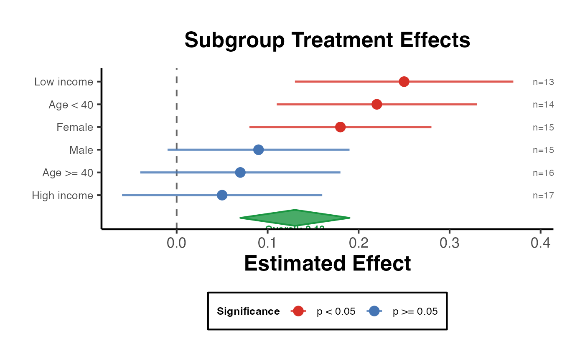

Heterogeneity Forest Plot
heterogeneity_forest_plot.RdAccepts a data frame of subgroup estimates and produces a forest plot suitable for publication. Subgroups can be sorted by effect size. An optional overall estimate is shown as a diamond.
Usage
heterogeneity_forest_plot(
estimates,
subgroup = NULL,
overall = NULL,
xlab = "Estimated Effect",
title = "Subgroup Analysis",
ref_line = 0,
sort_by = c("estimate", "none")
)Arguments
- estimates
A data frame with at minimum these columns:
labelCharacter. Subgroup label.
estimateNumeric. Point estimate.
ci_lowerNumeric. Lower confidence interval bound.
ci_upperNumeric. Upper confidence interval bound.
Optional columns:
n(sample size, shown as text),p_value(used for significance colouring).- subgroup
Character or
NULL. Column name inestimatesto use as a grouping factor for colouring. DefaultNULL.- overall
A single-row data frame with columns
estimate,ci_lower,ci_upperfor the overall effect diamond.NULLto omit.- xlab
Character. x-axis label. Default
"Estimated Effect".- title
Character. Plot title. Default
"Subgroup Analysis".- ref_line
Numeric. x-intercept for the reference line. Default
0.- sort_by
Character.
"estimate"to sort subgroups by effect size,"none"to preserve input order. Default"estimate".
Details
Publication-Ready Forest Plot for Subgroup / CATE Analysis
Creates a publication-ready forest plot visualising treatment effect heterogeneity across subgroups or conditional average treatment effects (CATE). Confidence intervals are shown as horizontal whiskers, the point estimate as a filled dot colour-coded by statistical significance, and an optional overall-effect diamond is drawn at the bottom.
Examples
est_df <- data.frame(
label = c("Female", "Male", "Age < 40", "Age >= 40",
"Low income", "High income"),
estimate = c(0.18, 0.09, 0.22, 0.07, 0.25, 0.05),
ci_lower = c(0.08, -0.01, 0.11, -0.04, 0.13, -0.06),
ci_upper = c(0.28, 0.19, 0.33, 0.18, 0.37, 0.16),
n = c(150, 150, 140, 160, 130, 170),
p_value = c(0.001, 0.08, 0.001, 0.26, 0.001, 0.40),
stringsAsFactors = FALSE
)
overall_df <- data.frame(estimate = 0.13, ci_lower = 0.07, ci_upper = 0.19)
heterogeneity_forest_plot(
estimates = est_df,
overall = overall_df,
title = "Subgroup Treatment Effects",
sort_by = "estimate"
)
